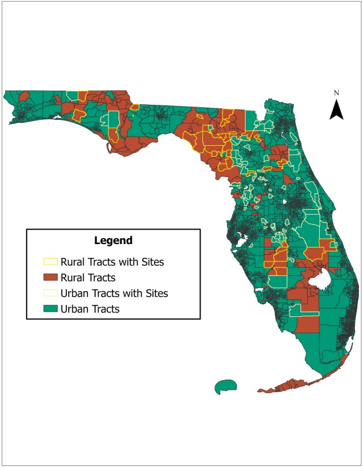

Journal article, Journal of Rural Studies, August 2026
Urban-Rural Transfer and Distributive Environmental Justice in Biosolids Land Application: A Geographic Information Systems (GIS) Analysis of Florida
Fernandez, E. (2026). Journal of Rural Studies, 126, 104324. doi.org/10.1016/j.jrurstud.2026.104324


Highlights
- Urban-rural transfer produces environmental inequality.
- Biosolids sites are disproportionately located in rural areas.
- Income is a stronger predictor of exposure than race.
- Results reveal within-rural socioeconomic stratification.